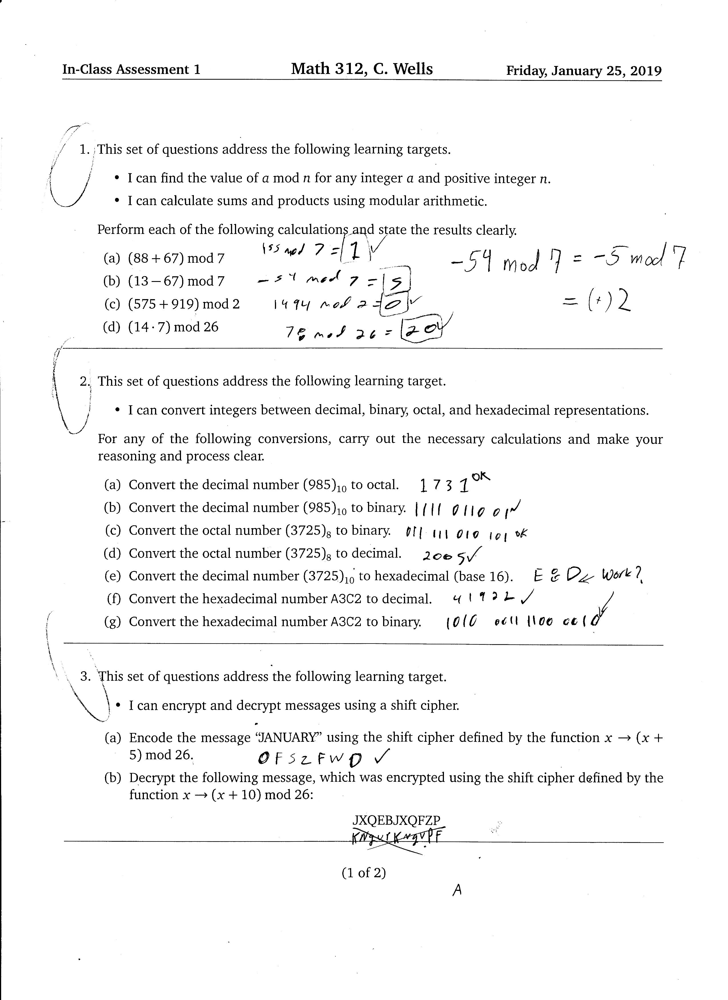
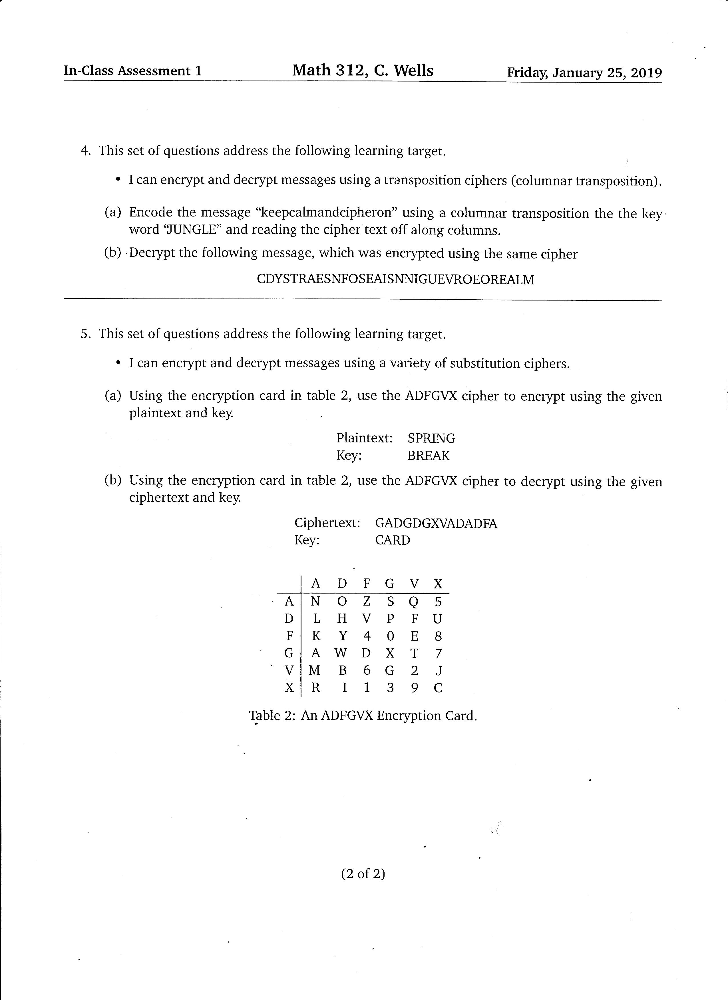

Contents
I Discussions of Course Grade 1
II Supporting Evidence 1
III In-Class Assessments 2
Assessment 1
Assessment 2
IV Class Activities 1
IV Class Activites 1
V Essays
Essay 1: Who are you and what do you like 3
V Outside research 4
Diffie-Hellman Key exchange
Grade Discussion
This course as encouraged me to in engage in my own independent research and analyze modern day cryptography that are of interest to me. There are a lot of things I have learned about the discrete logarithm problem, Euler's totient function, RSA encryption and the Diffie-Hellman key exchange protocol. I have learned some history of cryptography through reading the code book. I have analyze the in class assessments in depth learning and describing by mistakes, I also went over the problems I didn't complete as well. I believe with my understanding of the class activities, in-class assessments and my own independent research of RSA all together merits an A.
In-class Assessments
 
Overview of Assessment 1
In general I felt comfortable with the material on this Assessment I feel very comfortable modular arithmetic.
Problem 1 To solve the following problems I used the general technique
\((88+67)\bmod 7= 88+67-7\cdot \text{floor}\left(\frac{88+67}{7}\right)=1\)
part c is wrong because 13 and 67 were flipped when doing the calculations so the result was positive the correct answer should be
\((13-67)\bmod 7= 13-67-7\cdot \text{floor}\left(\frac{13-67}{7}\right)=2\)
Problem 2 This problem was all about base conversions.
Its possible to convert between any two base but for most people the highest base used to convert numbers to is base 16 and the lowest is base 2 so that will be our focus.
The big reason for converting from base 10 to base 2 is to be able to talk to computers easier,
computers compute in base 2 so its important to be able to convert to base 2. Below is
the general algorithm that can be used to convert between any two bases to base 10.
$$ \sum_{i=0}^{n} d_i(N^{i})=\text{(base N repersentation)}$$
Enter a base then the number for example 2 100 = 4
If you want to do the opposite or convert from base 10 to base n you have to reverse the algorithm. So solving this equation requires you to solve for the different "d"s in such a way that
that the total equation is equivalent to Base repersentation. Once this has been done then combine all the
"d"s as you would a string and that's how you convert from base 10 to base \(N\)
Enter a base then the number for example 2 100 = 1100100
Problem 3 is a simple shift where you shift the whole alphabet by x amount. The problem with part 'b' is every instance of 'j' was not shifted back by ten however the rest of the cipher was shifted back by 10. Fun fact if the cipher was shifted back by 23 the message would be 'mathematics'
Original message: (+x)mod 26=
Problem 4 We are encrypting and decrypting a transposition cipher.
First we well make a table with the secret key at the top. Then well fill in the clear text,
message one character per column and below the letters of the cipher.
Message: Keepcalmandcipheron | Key: JUNGLE
| J | U | N | G | L | E |
|---|---|---|---|---|---|
| k | e | e | p | c | a |
| l | m | a | n | d | c |
| i | p | h | e | r | o |
| n |
| E | G | J | L | N | U |
|---|---|---|---|---|---|
| a | p | k | c | e | e |
| c | n | l | d | a | m |
| o | e | i | r | h | p |
| n |
we'll write the secret key in alphabetical order and transpose the columns of the message
Now we have encrypted the cipher which looks like: apkceecnldamoeirhp
To do the reverse and undo the encryption we just do the opposite
Message: cdystraesnfoseaisnniguevroeorealm | Key: JUNGLE
First make a table with the secret key at the top in alphabetical order. Then fill in the columns with the clear text on character per column.
| E | G | J | L | N | U |
|---|---|---|---|---|---|
| c | d | y | s | t | r |
| a | e | s | n | f | o |
| s | e | a | i | s | n |
| n | i | g | u | e | v |
| r | o | e | o | r | e |
| a | l | m |
| J | U | N | G | L | E |
|---|---|---|---|---|---|
| y | r | t | d | s | c |
| s | o | f | e | n | a |
| a | b | s | e | i | s |
| g | v | e | i | u | n |
| e | e | r | o | o | r |
| m | l | a |
Next order the columns to spell jungle
The Decrypted message is: yrtdscsofenaabseisgveiyneeroormla
problem 5 We are encrypting and decrypting the messages with the ADFGVX cipher
Plaintext: SPRING | KEY: BREAK
| A | D | F | G | V | X | |
|---|---|---|---|---|---|---|
| A | N | O | Z | S | Q | 5 |
| D | L | H | V | P | F | U |
| F | K | Y | 4 | 0 | E | 8 |
| G | A | W | D | X | T | 7 |
| V | M | B | 6 | G | 2 | J |
| X | R | I | 1 | 3 | 9 | C |
First we start with are card and match the column and the row with each character in the plaintext there should be two characters per plaintext character.
After this are text looks like: ag dg xa xd aa vg
Next we will make a table with are key word at the top and are cipher text will go beneath it as one character per ciphertext
character and we will also alphabetize the table for the final cipher.
| B | R | E | A | K |
|---|---|---|---|---|
| a | g | d | g | x |
| a | x | d | a | a |
| v | g |
| A | B | E | K | R |
|---|---|---|---|---|
| a | a | d | x | g |
| g | a | d | a | x |
| v | g |
Our cipher is text is: aadxggadaxvg
To decipher we can just do the opposite first look at the card
Ciphertext: gadgdgxvadadfa | Key: card
| A | C | D | R |
|---|---|---|---|
| g | a | d | g |
| d | g | x | v |
| a | d | a | d |
| f | a |
| C | A | R | D |
|---|---|---|---|
| a | g | g | d |
| g | d | v | x |
| d | a | d | a |
| a | f |
After in reading in the rows we can decipher: ag gd gd vx da da af using the table. The cipher is: swwjllz
Essays
You Are Who and What You Like
When looking at all the article’s on dating apps it's surprising to see how unsecured dating apps are and how much personal information they use.
The security of these apps is a huge issue and has some of the most private and cringiest moments of our lives. This sensitive data could be used for
blackmailing and social engineering. If a hacker could get access to some of the data they could pose as a match, try to gain a users confidence and trick
the user into sending them vulnerable information or money this is how people use social engineering to attack victims.
In the “Tinder’s Lack of Encryption Lets Strangers Spy on your Swipes” article somebody demonstrates how easy it is to spy on users swipes which can be done
with something as simple as wireshark. This raises the question to how secure is tinder and other dating sites and what other information can be stolen. Most sites
uses HTTPS because HTTP is considered not secure but not tinder which still uses HTTP according to the article. This is alarming because of the sheer amount of data
tinder actually collects on individuals. Some of the most private, cringiest and intimate moments of our lives are shared on this app so it's vital that this information
stay secure.
Most if not all dating apps work with some AI to try to match the client with the person of their dreams and the AI works even better with the paid version.
So it shouldn't come as a surpriseas to how much data dating apps actually store on you. Dating apps wanna know what kind of person you are looking for so there
algorithm can try to match you up with the person of your dreams. Collecting that much data is also used for studies like what is the most attractive race or whats are the most
desired features in a person. This kind of information is valuable to other researchers and advertisers.
Most people don’t wanna pay for dating sites unfortunately running such a big corporation is very expensive and while most dating sites have a few ads they don't have the
amount needed to run a corporation of that size. So the user is paying with there personal data that they are willing or unwilling to provide which tinder can sell to other companies.
If dating apps couldn’t create revenue this way then users would be forced to pay a lot of money or there apps would be flooded with advertisements. Nothing in life is free you pay
with money or with your personal data for these services.
So the big issue isn’t that these sites and apps have a lot stored on us but how secure is the data and who are the buyers? how securely do they handle our data? and what do they use if for?
Area of depth
The Diffie-Hellman key exchange
The Diffie-Hellman key exchange is key exchanged based on the RSA. It's an algorithm used to share encrypted secrets between two parties. Its primarily used as a method of exchanging cryptographic keys for use in symmetric encryption. Alice is trying send a message to Bob without Eve being able to decipher Alice's message. However Eve is able to intercept every message between Alice and Bob. To solve this problem Bob has a private key and Alice has a private key that they will not share with each other this should be a hug number randomly generated number we can refer to this as Bob or Alice's private key. Both Alice and bob well agree to some module function that can be represented in general terms as \(a(x)= b \bmod c\) both Bob and Alice will raise there private key to \(b\) generating a public key they then will share that key with each other and again raise there private key to there public key that they both shared the result will be a key that they will use to encrypt and decrypt information. If Alice and Bob use big enough numbers there cypher should stay secure and even tho Eve has both Alice and Bob’s public key. Eve still won’t be able to compute it without doing a massive amount of trial and error guess and checking even on the best performing computers of today it could take years to crack Bob and Alice's encryption. Eve will be stuck computing the discrete logarithm problem
An example of the Diffie-Hellman key exchange with very small numbers in practice you would use much bigger numbers
Note that an exponent of \(54\) is kind of pointless when working modulo \(17\), since \(\phi(17)=16\). Thus, because \(54\bmod{16}=6\), you might as well use \(3^{6}\bmod 17=15\).
So what's the problem? This method becomes extremely hard to maintain if Alice or Bob want to talk to multiple people at once because Alice would have to manage multiple private,
public, module functions and encryption keys. So Alice and Bob will need a function that's easy to decrypt with a key and hard to decrypt without a key. So so far we have \(m^i \bmod n=key\) we need a way to
decrypt 'i' to the original message. Alice sends '\(c\)' to Bob that she finds through \(m^i \bmod N
=c\). '\(i\)' in this case stands for encrypt. Bob takes Alice's '\(c\)' and then exponentiates that to the
\(a\)
decryption key. So our function will look like \(m^{id} \bmod N=m\); Therefore we need a way for Alice to construct 'i' and 'd' that makes it hard for anyone else to find 'd'. This will require a
second one way function that can be used to generate ‘d’. To do this we can uses prime factorization and the \(\phi\) function. Now we need to find a function which depends on knowing the prime factorization of N.
To do this we can use the \(\phi\) function which measures the breakability of a function. \(\phi\) calculates how many numbers are less then or equal to \(N\) that don’t share any common numbers with N.
Calculating the \(\phi\) function is hard but for in one case \(N-1\). Combining all this we can use Euler’s Theorem which is a relationship between the \(\phi\) function and modular exponentiation
that is \(m^{\phi(n)} \equiv 1 \bmod n\). This means that it's possible to pick any two number such that they don’t share any common factors. Combining all of this we can uses
$$m^{k \phi(n)+1} \equiv m \bmod n$$
Note that now it's easy to solve for '\(d\)' if \(d= \frac{\phi(n)+1}{i}\) so 'd' should always be Alice's private key.
Lets, see this in practice....
| Alice | Eve | Bob |
|---|---|---|
| Alice first generates two large prime numbers \(p_{1}\) and \(p_{2}\) for example \(p_{1}=53\) and \(p_{2}=59\) |
\begin{align*} N&= 3127 \\ e&=3 \end{align*} | Bob as a message he wants to encrypt say "hi". Bob encodes this message in some sort of number pade and gets 89 |
| Alice multiplies the two primes together to get a number N \( 53\cdot 59=N\)= 3127 |
Bob then locks his message up with Alice's lock by calculating
\(89^3 \bmod 3127 \equiv\)139 | |
| Alice can easy find \(\phi(N)\) \(\phi(n)=(53-1)\cdot (59-1)=\)3016 |
Bob then sends the message back to Alice 1394 | |
| Next Alice pick some public exponent 'i' for example i=3 With the condition it must be some odd number that doesn't share a factor with \(\phi(n)\) |
1394 | |
| Alice then calculates the decryption key. \(d=\frac{2\cdot 3016+1}{3}\)=2011 |
||
| Alice can now decrypt her message using her private key
\(1394^{2011} \equiv 89 \bmod 3127\) 89 is Bob's message |
Eve cannot calculate Bob's message with just the information Eve knows. To calculate Bob's number would require Eve to calculate the prime factorization of 1394 and if the prime number is big enough this could take years to calculate.